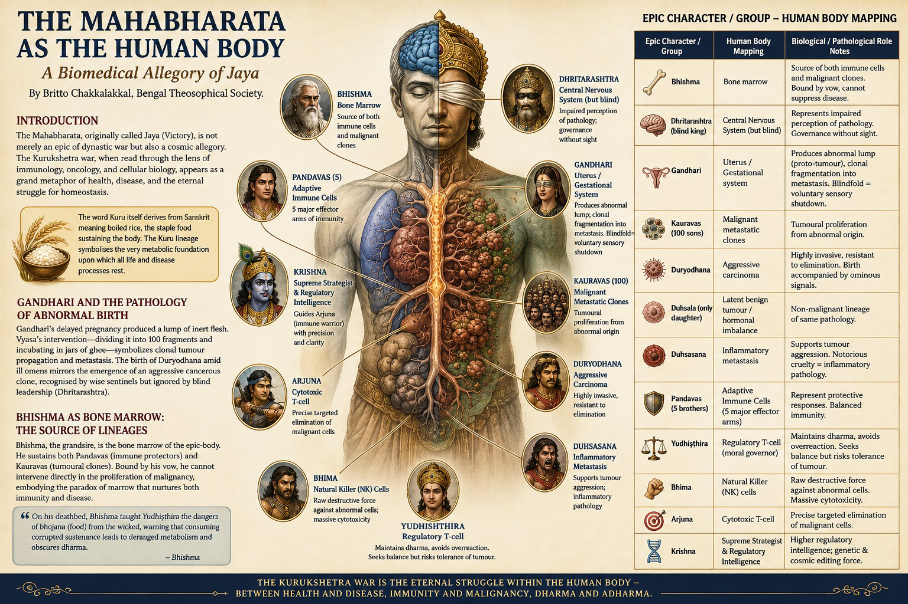

The Mahabharata as the Human Body: A Biomedical Allegory of Jaya
The Mahabharata, originally called Jaya (Victory), is not merely an epic of dynastic war but also a cosmic allegory. When read through the lens of immunology, oncology, and cellular biology, the Kurukshetra war appears as a grand metaphor of health, disease, and the eternal struggle for homeostasis.

Introduction
The Mahabharata, originally called Jaya (Victory), is not merely an epic of dynastic war but also a cosmic allegory. Having studied Sanskrit with anvaya (syntactical connection - contextual translation) and later attempting to translate portions of the Jaya (8,800 verses of Vyasa's core text), I discovered a striking resonance between its narrative structure and the physiology and pathology of the human body. The Kurukshetra war, when read through the lens of immunology, oncology, and cellular biology, appears as a grand metaphor of health, disease, and the eternal struggle for homeostasis.
The word Kuru itself derives from Sanskrit meaning boiled rice, the staple food sustaining the body. The Kuru lineage thus symbolises the very metabolic foundation upon which all life and disease processes rest.
Gandhari and the Pathology of Abnormal Birth
Gandhari, wife of Dhritarashtra, voluntarily blindfolded herself to share her husband's blindness, an act of renunciation that also signals impaired sensory signalling in pathology. Granted a boon by Vyasa to bear 100 sons, she experienced a two-year delayed pregnancy, producing not living children but a lump of inert flesh. This represents a pathological gestation, akin to tumoural or teratomatous masses rather than normal embryogenesis.
Vyasa intervened, instructing that the lump be divided into 100 fragments, incubated in jars of ghee. After two years, 100 sons and one daughter emerged, the Kauravas. This "jar-incubation" is a vivid metaphor for clonal tumour propagation and metastasis, where abnormal cellular material replicates into many malignant lineages.
The birth of Duryodhana, amid jackals howling and ill omens, mirrors the emergence of an aggressive cancerous clone whose presence is recognised by the body's sentinels (wise men), yet ignored by its leadership (Dhritarashtra).
Bhishma as Bone Marrow: The Source of Lineages
Bhishma, the grandsire, is the bone marrow of the epic-body. Just as the bone marrow generates both healthy and malignant bloodlines, Bhishma sustains both Pandavas (immune protectors) and Kauravas (tumoural clones). Bound by his terrible vow (bhishma-pratinja), he cannot intervene directly in the proliferation of malignancy, embodying the paradox of marrow that nurtures both immunity and disease.
On his deathbed, Bhishma taught Yudhiṣṭhira the dangers of bhojana (food) from the wicked, warning that consuming corrupted sustenance leads to deranged metabolism and obscures dharma. This is a profound allegory for how exposure to carcinogens, toxins, or unhealthy nourishment corrupts cellular conscience and precipitates disease.
Krishna's Lineage: The Bhoja Connection
Krishna, the supreme strategist and avatara, was born into the Yadava clan but linked maternally and politically with the Bhoja dynasty through his uncle Kamsa of Mathura. The Bhoja etymology recalls bhojana (food), suggesting Krishna's background represents metabolic reorientation. As the divine charioteer, he is the higher regulatory intelligence, the genetic and cosmic editing force, guiding Arjuna, the immune warrior, towards precise targeting of malignancy while preventing autoimmune destruction.
The Epic-Body Mapping
| Epic Character / Group | Human Body Mapping | Biological / Pathological Role | Notes |
|---|---|---|---|
| Bhishma | Bone marrow | Source of both immune cells and malignant clones | Bound by vow, cannot suppress disease |
| Dhritarashtra (blind king) | Central Nervous System (but blind) | Represents impaired perception of pathology | Governance without sight |
| Gandhari | Uterus / Gestational system | Produces abnormal lump (proto-tumour), clonal fragmentation into metastasis | Blindfold = voluntary sensory shutdown |
| Kauravas (100 sons) | Malignant metastatic clones | Tumoural proliferation from abnormal origin | Duryodhana = aggressive clone |
| Duhsala (only daughter) | Latent benign tumour / hormonal imbalance | Non-malignant lineage of same pathology | — |
| Duryodhana | Aggressive carcinoma | Highly invasive, resistant to elimination | Birth accompanied by ominous signals |
| Duhsasana | Inflammatory metastasis | Supports tumour aggression | Notorious cruelty = inflammatory pathology |
| Pandavas (5 brothers) | Adaptive Immune Cells (5 major effector arms) | Represent protective responses | Balanced immunity |
| Yudhiṣṭhira | Regulatory T-cell (moral governor) | Maintains dharma, avoids overreaction | Seeks balance but risks tolerance of tumour |
| Bhima | Natural Killer (NK) cells | Raw destructive force against abnormal cells | Massive cytotoxicity |
| Arjuna | Cytotoxic T-cell | Precise targeted immunity | Guided by Krishna (higher intelligence) |
| Nakula & Sahadeva | Helper T-cells, B-cell pathways | Coordination and antibody production | Secondary but essential |
| Krishna | Higher signalling / genome editor | Guides immune response, prevents autoimmune failure | Supreme regulator |
| Dronacharya | Antigen-presenting cell (teacher) | Presents both dharmic and adharmic signals | Ambiguous role in immune training |
| Karna | Immune cell with defective receptor (born with armour but rejected) | Potent yet misaligned effector | Represents autoimmunity tendency |
| Sakuni | Oncogenic signalling molecule | Master of deceitful dice rolls = mutational errors | Drives malignancy |
| Kurukshetra battlefield | Human body (terrain of pathology) | The site of immune-oncological war | Life vs death struggle |
| Bhagavad Gita | Molecular signalling dialogue | Instruction manual of immunity and dharma | Guides balance between apoptosis and survival |
Disease Mapping
- Kauravas = Metastatic carcinoma clones.
- Pandavas = Adaptive immunity effectors.
- Dhritarashtra's blindness = Loss of surveillance.
- Gandhari's pregnancy = Dysregulated embryogenesis → tumour initiation.
- Bhishma = Bone marrow paradox (source of both immunity and disease).
- Sakuni's dice = Mutational randomness driving oncogenesis.
- Kurukshetra war = Tumour–immune conflict.
- Krishna's guidance = Immune checkpoint regulation, preventing both immunosuppression and autoimmunity.
Conclusion
The Mahabharata as Jaya is more than mythology, it is a physiology of the cosmos. When read through the Sanskrit roots (Kuru as boiled rice, Bhoja as food, Jaya as victory), its verses foreshadow the eternal contest between health and disease within the human body. Gandhari's abnormal gestation, Bhishma's marrow paradox, Duryodhana's malignant emergence, and Krishna's supreme regulation all mirror biological truths.
Thus, Vyasa's Jaya may be seen as the earliest allegorical textbook of systems biology, immunology, and oncology, couched in the language of cosmic law and order.